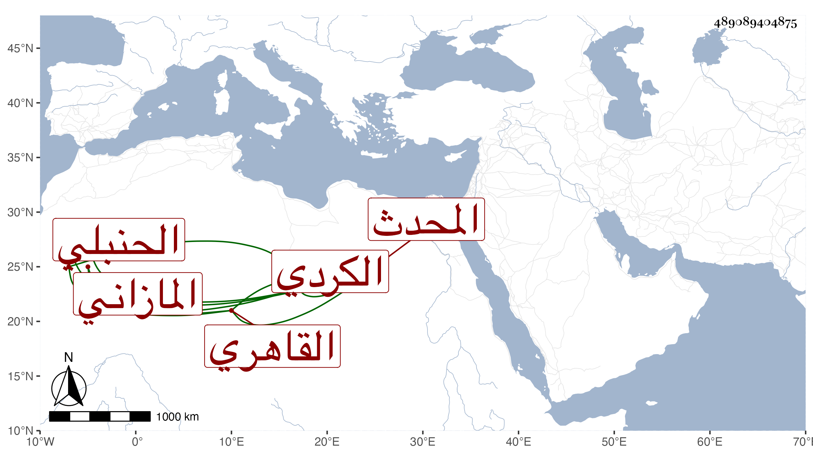

0902Sakhawi.DawLamic.ITO20230111-ara1.EIS1600.489089404875
Biography ID: 489089404875
أحمد بن أحمد بن علي بن أبي بكر بن أيوب بن عبد الرحيم بن محمد بن عبد الملك بن درباس فخر الدين أبو إسحاق المازاني الكردي القاهري الحنبلي المحدث ويعرف بابن درباس وزاد بعضهم بين أبيه وعلى محمد ، قال شيخنا في معجمه شاب نبيه سمع من بعض شيوخنا وأكثر عني . قلت وكان أحد المنزلين عنده في طلب الجمالية واشتمل عليه . ومما سمعه عليه النخبة بقراءة الشمني في سنة خمس عشرة وكتب من تصانيفه تعليق التعليق وقراءة الكمال أو أكثره انتهى . وتيقظ وجمع أشياء حسنة ، ومن فوائده أنه سئل عن قوله صلى الله عليه وسلم سبعة يظلهم الله هل له مفهوم وكان ذلك سبب جمع سبعة أخرى ثم سبعة أخرى كما ذكرت ذلك في الزكاة عن شرح البخاري وسألني مرة أخرى عن المسانيد التي يخرجها أصحاب المسانيد في صفة النبي صلى الله عليه وسلم من أي الأقسام الثلاثة هي أي إن أصحاب الحديث وغيرهم يصرحون أن السنن تنقسم إلى قوله وفعله وتقريره وإذا لم تكن من هذه الأقسام أشكلت على ما أطلقوه من الحصر في ثلاثة ، وجمع كتابا في آل بيته بني درباس وآخر في آل ابن العجمي ولم يزل مكبا على الاشتغال والطلب وكتابة الحديث مع الدين والخير والعبادة إلى أن مات في المحرم سنة سبع عشرة ولم يتكهل ولم يتأهل ، وهو في عقود المقريزي باختصار وقد اختصر التبصرة في الوعظ لابن الجوزي بزيادات رحمه الله وعوضه الجنة .
